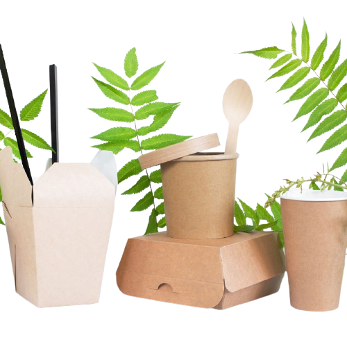

Solution to Pollution
Support Environment-Friendly Products
We should support environmental-products because this could help minimize pollutants and protect the environment. We should avoid or, at least, minimize the use of plastic, styrofoam, etcetera as they take large amount of time to disintegrate. We should also avoid the use of straws. We should support the programs and the organizations that help in finding alternatives to plastic materials.

Do the 5R's
We should always perform 5R's. The R's are Refuse, Reduce, Reuse, Recycle, and Rot. We should refuse to get things we do not need. We have to reduce the things we do not need by giving it away. We should reuse the things we have need. We should recycle or put the things we cannot reuse to a recycling bin. Lastly, we should put the things we could not refuse, reuse, reduce, and recycle to a compost pit.
Conduct and Support Clean-up Programs
We should conduct and support clean-up programs. There are many waste in our environment, and this is killing the animals, the environment, and us. Stopping or minimizing the root of pollution would help, but we still need to clean the materials that are polluting the land, sea, and air. To minimize the pollution, we have to clean the seas and the lands. We also have to filter the air to remove the dirt and pollutantsn from our cars and factories.


Put Waste in the Right Bin.
We should put the waste we have in the right bin. We should segregate paper, glass, organic materials, plastic, and we should not combine dry and wet waste. Segregating the waste could help us do the 5R's especially recycling. Mixing dry materials with wet could affect the quality of the dry material. This could deprive us of reusing or recycling the things in the bin.
Minimize the Usage of Materials that Produce Pollutants
We should minimize the use of materials the produce pollutants. One of these is vehicle. Vehicles usually produce smoke, and this affects the quality of air and the quality of life in the area. We should use bikes, unicycles, scooters, and many more to fix the problem. This could also help us be or stay fit. We should minimize the usage of bulb, aircon, fire, and LPG.